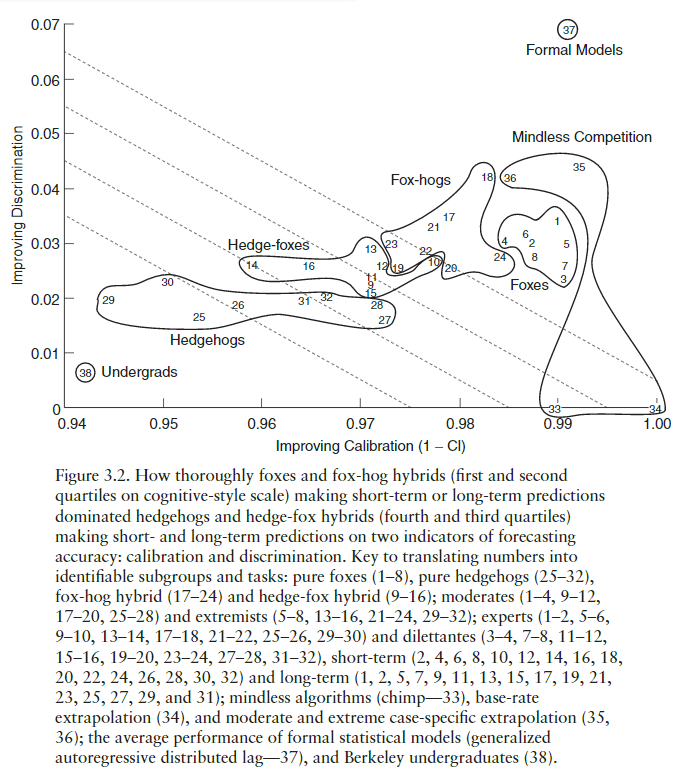
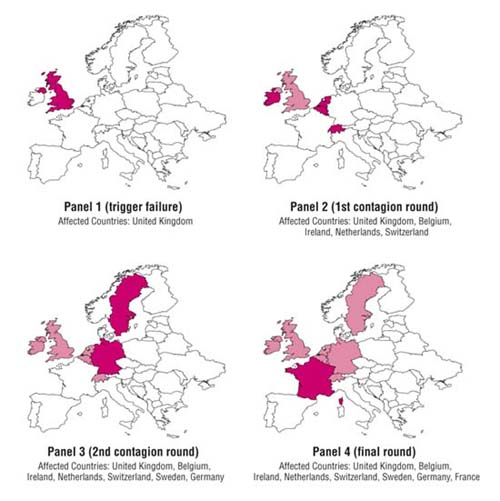

mindmap
root((Model<br> Thinking <BR> Zoo))
Collective Action
Tipping Point
(Schelling Segregation)
{{index of dissimilarity}}
(Granovetter collective behavior)
(Standing Ovation)
{{celebrity}}
{{academic}}
)Mechanisms(
{{sorting}}
{{peer effect}}
)Classification(
{{Contextual tipping point}}
{{Diversity index}}
{{Entropy}}
(Percolation models)
(Contagion models)
{{diffusion}}
{{SIS model}}
Aggregation
{{Central <br>Limit<br> Theorem}}
{{Six Sigma}}
{{Automata}}
[1-d Automata]
[Game of life]
[Langton's Lambda]
Preference Aggregation
Decision Models
[Multi-criterion decision making]
Spatial choice models
Probabilistic Models
(Decision Trees)
{{value of information}}
(Normal Distribution)
{{Empirical<br>rule}}
(Markov Process)
Game Theory
Rational actor models
Colonel Blotto
(Prisoner's Dilemma)
{{Tit for tat}}
{{Grim trigger}}
(Pure Coordination Game)
(Inefficient coordination)
Linear Models
(Categorical models)
(Regression)
(Multiple Regression)
{{R2}}
{{P values}}
Non Linearity
(linear approximation)
(break into quadrants)
(non-linear terms)
(Big Coefficient)
(New reality thinking)
Lyapunov Functions
Learning Models
Wisdom of crowds
Spatial Voting
Economic growth
(Yearly Interest)
(Exponential Growth)
(Basic Growth<br>Harrod–Domar model)
(Long-term<br>growth model)
(Solow growth model)
 Perhaps not the subject of this course, but sometimes I wonder
Perhaps not the subject of this course, but sometimes I wonder
TLDR: Skip this lecture. 💩 💩 💩
- Most of this lecture wastes time- Dr. Page is preaching to the choir.
- Anything covered here will be handled better later on in the context of real problems and models to solve them.
- Definitions are essential, but there are no definitions here.
- 🤖 > 🦊 > 🦔 > 🧢
- Don’t expect to see any models by these people.
If you are still here, have a look at this model Zoo.
Why model?
Essentially, all models are wrong, but some are useful. — George E. P. Box [@box1976] 1
1 :wondering: Both the course and, even more, so his book, [@page2018model], are punctuated with quotations that repeatedly interrupt the flow, gaining nothing in the process when the author might have explained some of the more puzzling assertions he made. Let’s keep these under reign, emphasizing the few that abbreviate and aid in communicating a salient point.
This obligatory quote on models is the most famous, and here is the next:
It is difficult to make predictions, especially about the future. — Yogi Berra
Reasons to use models:
👠I don’t buy the claims that knowing how to use a model is a requirement to be an intelligent citizen of the world. 2 Dr. Page makes a better claim about knowing many models and which one makes more sense in a given context - but that’s a different ballpark.
2 👠While knowing how to model can be helpful, I’m pretty confident it is not required. Newsflash 📰 The UN isn’t giving any world citizen cards even if you pass this course 😆
3 💠thinking can get complicated as models grow, there can be many features, many steps so we should remember to keep asking “How does this model make my thinking clearer?†to keep us on the right track!
👠Using models helps us think 🤔 more clearly3. When models explicate assumptions, we can use them to divide and conquer big problems into more manageable, clearly labeled parts (like endogenous variable, exogenous variable, effect size, p-value, statistical-significance, practical-significance) and keep us focused 📸 by prioritizing 🚨 the effects while omitting insignificant minutia.
👠Becoming a better decision-maker! Experts relying on intuition and rules of thumb tend to exaggerate the importance of edge cases and frequently fall victim to their bias. For these reasons, a simple linear model calibrated to actual data often makes better predictions.
👠Models help us to use and understand, decide, plan, and design. The primary use of modeling in industry within production systems is where they replace human decision-makers to make recommendations or decisions.
👠Fertility Model can have applications in other fields. Simple models tend to be the most fertile. Some examples are:
- Model everything first using a straight line
- Model anything using a normal distribution
- Coloumbs’ law has the same form as Newton’s universal law of Gravitation,
- When economic models are simpler, their applications broaden.
- Benoit Mandelbrot said he saw the same graphs he was studying long-term interaction in time series of Nile flooding data in a researcher working on US grain supply.
- Physical analogies for differential equations e.g. MONIAC shown on the right that Bill Phillips used to model the uk economy with water.
- Markov chains have been used to identify authorship of the Federalist Papers.
- Keep the first term of a Tylor expansion, AKA first-degree approximation.
- Keep the first terms of a Fourier expansion
- Keep the biggest term of a linear model, AKA “the big coefficient†4
- Equilibrium in game theory
4 rare
So, we get two dimensions of fertility.
5 rare
6 Obvious
Intelligent citizens of the world
“πόλλ’ οἶδ’ ἀλÏπηξ, ἀλλ’ á¼Ï‡á¿–νος ἓν μÎγᆓa fox knows many things, but a Hedgehog knows one big thing†— Erasmus’s Adagia from 1500
Models work because they are abstractions that simplify.
Models have become essential to the lingua franca 7 of academia, business, and even politics. Companies regularly place models in their production systems, automating decisions and improving internal processes.
7 new language
Dr Page alludes to the Great Books Movement, which by all accounts was a failure not only tried to sell out copyright books to its clients but also claimed to inform the intelligentsia with a collection of ideas they should be familiar with. One such idea is “tie yourself to the mast”, alluding to Odysseus’ request from the Odyssey where he wished to the siren’s song. This idea recurs with the British painter Turner, who wanted to observe a storm.
Dr. Page points out that proverbs that encode these ideas sometimes come in contradictory pairs, e.g.:
“Two heads are better than one”
“Too many cooks spoil the broth.”
“he who hesitates is lost.”
“A stitch in time saves nine.”
Dr. Page succinctly states, “Models tie us to a mast of logic.†When we run a model, we can avoid being swayed by our biases and usually also get an estimate of how well this outcome fits with observed reality.
Many sciences rely on models. Game theory models are foundational in understanding behavior in economics, political science, and even linguistics. Networks are used in sociology, ecology, and biology.
Another reason to use models is that they are better at predicting than making a decision or an estimate without one. The following section makes the point that using multiple models is even better.

This graph, taken from [@tetlock2015superforecasting] by Psychologist Philip Tetlock‘s research into the accuracy of political prediction by experts, compares the analysts’ accuracy called calibration on the horizontal axis, with how conservative their predictions are on average.
Let us review the groups we can see in the graph:
🧢 Undergrads make the worst analysts.
🦔 Hedgehogs are the analysts whom Tetlock characterizes as domain experts who know a lot in one area but effectively use a single 🔮 large model. Hedgehogs tend to be poor at predicting future outcomes. This is the type of analyst 📺 TV panels tend to feature — wrong but consistently wrong ⌠for decades.
🦊 Foxes are the analysts whom Tetlock describes as utilizing 🔮 many 🔮 loose 🔮 models 🔮. They tend to be better than the Hedgehogs and can become good predictors once they 🫠learn to 📠calibrate. 8
🤖 Formal models, Even simple linear ones, tend to outperform the foxes. 9
8 Tatelocks describes this as learning to update their evaluation dozens or hundreds of times as they collect and evaluate new evidence. These updates are usually getting smaller as time goes by.
9 Formal models are mathematical abstractions. An essential point omitted in the lesson is that they tested these formal models based on the data provided by the above hedgehogs and foxes.
👠Models make us humble. Using a model can dramatically change our initial picture of the situation. Models that work for a long time can stop working overnight, and in many cases, their users don’t know why or how to fix them.
Example 1 (Real Estate Crash of 2008) Most people who used a simple linear model of house prices failed to forecast the housing crash of 2008. 10
10 💠so Models may make us complacent
Scott stated that analysts who predicted the crash could have made a killing on the stock market. This is the plot of the The Big Short. But this is overselling the model and ignoring the real complexities.
- 👿 almost everyone in the know knew there was a Real Estate bubble
- Bubbles are very profitable 💵: till they explode 🤯.
- 🔮 Modelling when 📅 a bubble will explode is a notoriously difficult task 😵.
- Making a 💵 big 💵 profit 💵 requires making a bet 🙄 by buying 🩳 short positions in the market ğŸ›ï¸.
- As the bubble grows, you need to 💰 pay 💵 to keep your 🩳 short position.
- You need to raise a lot of 💰 money from 🏌️ investors to make a profit from a crash, you need to keep the 🩳 short position contract until the bubble bursts or you lose your pants 🤢.
- The system is ğŸ´â€â˜ ï¸ rigged—even when the bubble burst you will have a hard time 🦈 cashing in. The investment banks 🦠and insurgence companies ğŸ›ï¸ refused to devalue their derivatives even when the primary assets had crashed until they had dumped their toxic 🤑 portfolios and safeguarded their positions 🤷🏽.
- Some investment banks 🦠went under 🤦‍♂️ before they honored their contracts.
A final point is that their 🔮 models are not easy to find; they were probably not published.
The point is therefore that using multiple 🧠mental 🔮 models is good approach and that if they are formal models then we are going to be better off. In many complex scenarios, we will consider only people using multiple models are better than a random guess.
Not all forecasters are humble but Good forecasters use models tempered by personal judgement. Bruce Bueno de Mesquita, International Conflict predictor. Recent books include @de2011dictator; @de2009predictioneer; and @de2005logic. Models give guidance that blends experience and decision-making.
The course is concerned primarily with agent based models. However, these are often rule based models, which in certain cases be formalized using game theory which may allow a more mathematical approach.
Thinking 🤔 more clearly
A problem well-stated is a problem half-solved — Charles Kettering, head of research at GM
Modeling following the reductionist approach in science. The let us think 🤔 more precisely about how things work and in the process we get to throw out any parts that are less important.
Using models consists of the following steps:
- Name the parts.
- If we build a real estate regression model for pricing, you need to collect data on apartments, such as location, historical prices, size, rooms, floor, view, directions, and neighborhood.
- If we build a movie recommendation system, we need to identify the movies, their rating, and the people who watched and ranked them.
- If we need to model a marketing website, we need to know the customers, their customer journey, their interaction with ads, landing pages, product and information pages, shopping carts, checkout forms, inventories, and social media, as well as minor events and particularly ZMOT. All these and more are available from web/app analytics products and from advertising platforms.
- Identify the relationships between the parts. In a regression, you get the coefficients that set the size of the effect that changing the explanatory variables has on the response variable.
- in game theory model we consider the relationships between action by player 1, subsequent actions by player 2 and thier ultimate payoffs.
- Work through the logic. :::
Say we want to estimate the length of a rope needed to tie around the Earth at one meter above the surface. Let’s further assume the Earth’s circumference is 40,000 km. Since
\[C = πD\]
we get
\[ \begin{aligned} C &= \pi(D_\text{Earth} + 2m) \\&= πD_\text{Earth} + (π * 2m) \\&= 40,000 km + 6.2m \end{aligned} \]
Inductively explore adding one case at a time until you arrive at a general rule
Models of 🦋 dynamical systems â›ˆï¸ have different classes 11 of outcomes, these are:
11 each may take different forms
- 🧷 Equilibrium (characterized by some steady state pattern)
- 🌀 Cycle (characterized by some periodicity)
- 🤡 Random (characterized by Probability distribution)
- 🧠Complex 12 (characterized by Strange attractors)
12 Chaotic
Models can help us to predict which of these outcomes will materialize.
For instance, the supply and demand for oil might increase in a relatively consistent pattern. The cost of oil is influenced by various factors, including reserves, market participants, political dynamics, etc., making its price complex and difficult to forecast, yet not entirely unpredictable.
Identify logical boundaries. Models help us determine what context is relevant and at what point it is no longer applicable.
Facilitate communication. Taking politics as an example: by evaluating how liberal or conservative both a candidate and a voter are, we can place them in a model to see which candidate aligns more closely with the voter’s preferences. This can be used to choose the best talking point for a call to that voter soliciting a campgn contribution.
Using and understanding data
Another model type is the explicative model, which can be used to understand and understand data.
Understand patterns. e.g., fluctuations in GDP growth can be explained by a business cycle model.
Extrapolate. e.g., if the price of a house in a neighborhood is a linear function of the number of \(m^2\), and you know the number of \(m^2\), then you could use the function to predict the price of the house via the point value on the function graph;
Produce bounds models that capture uncertainty like an estimate of inflation ten years hence should produce a range rather than one specific number; this range can be used as a lower and upper bound in any downstream tasks
Retrodict 13. We can use models with the data to predict the past. If we have missing data in our historical records, we can put our model to work to interpolate the missing past. This is also called retrodiction or imputation. Another way we use past data is for model cross-validation, where we omit part of the data from model training and then evaluate the model on the held-out data.
13 predict the past
Predict other things. If you build a model that is good at predicting the unemployment rate, you are well on the way to predicting the inflation rate, which we call a downstream task. In astronomy, early models of the solar system predicted an unknown planet; guided by this, astronomers pointed the telescopes into the night sky and soon discovered Neptune.
Informed data collection. When we build a a model to predict school performance to help improve education policy, we begin by naming the parts, in these case, we might choose the following explanatory variables: teacher quality, the parents’ highest level of education, absences, the school’s budget, size of the classroom, etc. We fit the model and we can quickly see if we need more data. Thus the model informs us determine which and how much data we need to collect.
Estimate hidden parameters14. We can use data to tell us more about the model and then use the model to tell us more about the world.
14 latent variables
the SIR model is an established contagion model describing the spread of diseases. SIR is an acronym for the compartments of Susceptible, Infected, and Recovered individuals. Once we observe the data on how many people are in each compartment, we can predict how an epidemic will progress over time.
Calibrate. After constructing a model, one should calibrate it to the data so that its predictions are as close as possible to our view of the real world.
Using models for Decisions, Strategy, and Design
Modeling helps us make better decisions. Models let us formulate a strategy, an optimal response to any contingency. They are also useful when we want to improve a design.
Some use for models
Decision Aids
When probabilistic distributions are weighted with the cost of each possible alternative, managers get a view of the risk associated with different decisions. c.f. co-risks chart, which suggests why the US government let Lehman Brothers fail, but bailed out AIG. The economy eventually recovered and it appears the US government made a sound decision.
Example 2 (Company bailout) We can use the co-risk graph to understand the network of relationships between financial institutions like Morgan Stanley, Bear Sterns, AIG, etc. in, in terms of how their economic success or failure are correlated to one another. Notice the hubs in red, Bear Sterns, and AIG. The layman’s term for this is Too big to Fail.
The US government, facing the prospect of cascading failure of it largest financial institutions, has to decide which banks to bail out and which ones to allow to fail. The graph which shows the dependence between the top financial institutions indicating how likely one would fail would cascade to the other.
If AIG were to fail, this would be the worst-case scenario. If we sum up its incoming arrows, we get about 3000 units of systemic risk influence. Now, if we consider Lehman Brothers, it has about 190 units of systemic risk. This type of chart makes it clear that failing to bail out AIG would risk all the big banks going bankrupt, while letting Lehman Brothers fail would impact only a small part of the market
p.s. Lehman Brothers is no more; AIG paid the bailout in full and ahead of schedule. 15
15 Q. How do we make a model like this?
Example 3 (Monty hall problem)
- The Monty Hall problem is named after Monty Hall, the host of the show Lets Make a Deal that aired during the 1970’s.
Suppose you’re on a game show, and you’re given the choice of three doors: Behind one door is a car; behind the others, goats. You pick a door, say No. 1, and the host, who knows what’s behind the doors, opens another door, say No. 3, which has a goat. He then says to you, “Do you want to pick door No. 2?†Is it to your advantage to switch your choice? – [@vos1990ask]
When Savant wrote in her column, the player should switch. She received thousands of letters from reader, almost all disagreeing with her.
I have added a decision tree explaining her solution although Wikipedia from which I sourced the images provides greater depth of analysis as well as alternative ways to get to the solution.
The main point is that without a model, this kind of problem can be notoriously hard to solve for most people, including Ph.D.
Comparative Statics
Predictive modeling lets us evaluate statistics statistic on our data and compare outcomes of different interventions.
Example 4 (shifting equilibrium in supply curve) e.g., in the graph \(S\) is a supply curve for some good, while \(D1\) and \(D2\) are demand curves. When demand changes from \(D1\) to \(D2\), both quantity demanded goes up and the price goes up. Economic Models help us to understand world might behave if equilibrium conditions change and we get this by making a projection in a simple model.
Counterfactuals
Let us play out different scenarios. Even though history only runs once with sufficiently robust causal models, we can test hypotheses spanning many possible worlds and conduct a what-if analysis.
Example 5 e.g., in April of 2009, the Federal Government decided to implement a recovery plan. Many economists tested their models of the economy to compare unemployment rate forecasts with or without the recovery plan. Most reported an improvement.
We will never be sure if our predictions of a slowdown would have happened without the recovery plan, but if we have modeled the parts correctly, there is a good chance that the model will capture the better part of the recovery plan. Counterfactuals often lack sufficient data to yield precise outcomes, but their outcomes can help determine the general patterns for figuring out whether a policy is good or not.
Identify & Rank High Leverage Points

High leverage points are rows/items in a dataset that have an unusually large bearing on the outcomes of a system. Rise or fall in those values can shift the predictions of the model in a material way.
Example 6 (Contagion model for economic failure of the EU) A contagion model of economic failure shows that if Great Britain’s economy fails, this will be a cascading failure triggering the Netherlands, Switzerland, Ireland, and Belgium to fail. This will cause more solid economies of Germany and Sweden to fail, and after that France’s economy will also fail.
This model shows how interlinked EU financial system are. It also shows that London. UK’s financial center is a High leverage point of the EU.
Example 7 (Impact of the Carbon Cycle on Global Warming) The carbon cycle is one of the models that is used to understand climate change. Total amounts of carbon are fixed, but they can be in the air or on Earth. Down on the Earth is much better as it isn’t contributing as much to global warming. If we consider an intervention, we may first pause and wonder where in this cycle there are high leverage points. If surface radiation turns out to be the dominant coefficient, we may choose to define policy in terms of this and the other leading coefficients.
Experimental design
Example 8 (Auctions) Suppose we want to to auction off the bandwidth for mobile communication to raise as much money as possible. We can check which auction design works best by simulating simple models of agents bidding in a mock auction. Each agent will have their private information on how much they are willing to pay and for what and we can see which design nets us the most.
Auction theory is perhaps the most prominent application of mechanism design, where the goal is to allocate items or rights (like public good like bandwidth, a license or a patent) to those who value them the most. Different auction formats (Sealed bid, Second Price, English auction, Dutch auction, etc.) are designed to reveal participants’ true valuations and maximize revenue or efficiency.
Institutional design
Mechanism design is a field in economics and game theory that focuses on designing economic mechanisms or institutions that achieve desired objectives, given individuals’ private information and strategic behavior. It’s essentially the reverse of traditional economic analysis: instead of predicting outcomes based on existing rules and behaviors, mechanism design starts with the desired outcomes and works backward to create laws or mechanisms that lead to them. Here’s a more detailed look at its key concepts and principles:
Example 9 (Voting Systems) Voting mechanisms are designed to aggregate individual preferences into a collective decision. The challenge is to design a system that reflects the true preferences of the electorate, considering issues like strategic voting.
Example 10 (Public Goods Provision) Mechanisms for public goods (like parks or national defense) aim to ensure they are provided at appropriate levels despite free-rider problems and individuals’ incentives to under-report their valuation of these goods.
The Stanley Reiter diagram, named after the economist Stanley Reiter, (one of the Doctoral advisers of Dr. Page), is a graphical tool used in mechanism design, a branch of economic theory. This diagram helps illustrate the fundamental concept of a mechanism in an economic context, particularly focusing on how private information from different agents (participants) can be aggregated and processed to make collective decisions or allocate resources efficiently.
- The box with \(\Theta\) represents the type space, AKA the environment, e.g., the set of technologies or people’s preferences.
- \(X\) is the (desired) outcome.
- \(f(\theta)\) is called a social choice function, which maps a type profile to an outcome.
- In this Game of mechanism design agents send messages \(M\) in a game environment \(g\)
- The $ (M,g,)$ can be designed to implement some social choice function \(f(\theta )\)
Components of the Stanley Reiter Diagram
The diagram typically consists of the following main components:
- Agents: These are the participants in the mechanism. Each agent has private information, such as preferences, valuations, or types, that is relevant to the decision-making process.
- Message Space: For each agent, there is a message space that represents all possible messages or reports that the agent can send within the mechanism. These messages are how agents communicate their private information.
- Outcome Space: This is the set of all possible outcomes that can result from the mechanism. Outcomes could be allocations of goods, pricing decisions, policy choices, etc., depending on the context of the mechanism.
- Social Choice Function (SCF): The SCF is a theoretical concept representing the ideal decision rule that maps the true state of the world (the agents’ private information) directly to outcomes. However, because the mechanism designer does not have direct access to the agents’ private information, the SCF cannot be implemented directly.
- Mechanism \(M\): The mechanism itself is represented in the diagram by two main components: the message profile (a combination of messages sent by all agents) and the outcome function. The outcome function takes the message profile as input and determines an outcome based on the rules of the mechanism.
How the Diagram Works
- Each agent sends a message from their message space. These messages contain or represent their private information.
- All the individual messages form a message profile.
- The outcome function of the mechanism processes this message profile to determine an outcome from the outcome space.
Purpose and Application
The Stanley Reiter diagram serves several purposes:
- Visualizing Mechanism Design: It provides a visual framework to understand how mechanisms can be designed to achieve specific objectives, such as truthfulness, efficiency, or fairness, by processing private information.
- Illustrating the Role of Incentives: The diagram helps in analyzing how different mechanisms can create incentives for agents to report their private information truthfully or behave in a manner that leads to desirable outcomes.
- Designing and Comparing Mechanisms: Laying out the components of different mechanisms allows for a comparative analysis of their effectiveness in achieving various economic and social goals.
Despite its abstract nature, the Stanley Reiter diagram is a powerful tool for understanding the process of mechanism design, highlighting the interaction between private information, strategic behavior, and collective decision-making in economic systems.
To Choose among policies
This is the domain of decision models. These can be simple like a classification model or complex like a recommendation system.
Reducing Green House emissions
Say we need to choose a market for pollution permits or a carbon emission trading system. However, if you review the Wikipedia article, you will see many different options. What we can do is build a (simple) model and use it to tell which one is going to work better. This might be more objective since there are lobbying and external interests at play in such a decision.
Reducing Green House emissions
We need to decide about measures to reduce temperature and mitigate pollution. Green spaces is generaly an improvement. But after adding such an area people could move next to that and build houses all around it, which just leads to even greater sprawl. Perhaps planting trees along the streets is a better alternative?
So what may seem like a good idea the first time you think 🤔 about it may not look so hot once you look at it through the lens of a model?
References
Note: this page is based on the following source:
- [@page2017modelthinking] MOOC, Course material & Transcripts.
- TA Notes by [@fisher2017modelthinking].
- Student notes by in [@kleinikink2016naturalmoney] and [@groh2017model].